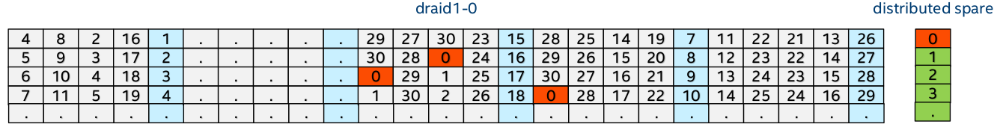

dRAID Howto¶
Note
This page a describes work in progress functionality, which is not yet merged in master branch.
Introduction¶
raidz vs draid¶
ZFS users are most likely very familiar with raidz already, so a
comparison with draid would help. The illustrations below are
simplified, but sufficient for the purpose of a comparison. For example,
31 drives can be configured as a zpool of 6 raidz1 vdevs and a hot
spare: 
As shown above, if drive 0 fails and is replaced by the hot spare, only 5 out of the 30 surviving drives will work to resilver: drives 1-4 read, and drive 30 writes.
The same 30 drives can be configured as 1 draid1 vdev of the same level of redundancy (i.e. single parity, 1/4 parity ratio) and single spare capacity: 
The drives are shuffled in a way that, after drive 0 fails, all 30 surviving drives will work together to restore the lost data/parity:
- All 30 drives read, because unlike the raidz1 configuration shown above, in the draid1 configuration the neighbor drives of the failed drive 0 (i.e. drives in a same data+parity group) are not fixed.
- All 30 drives write, because now there is no dedicated spare drive. Instead, spare blocks come from all drives.
To summarize:
- Normal application IO: draid and raidz are very similar. There’s a slight advantage in draid, since there’s no dedicated spare drive which is idle when not in use.
- Restore lost data/parity: for raidz, not all surviving drives will work to rebuild, and in addition it’s bounded by the write throughput of a single replacement drive. For draid, the rebuild speed will scale with the total number of drives because all surviving drives will work to rebuild.
The dRAID vdev must shuffle its child drives in a way that regardless of which drive has failed, the rebuild IO (both read and write) will distribute evenly among all surviving drives, so the rebuild speed will scale. The exact mechanism used by the dRAID vdev driver is beyond the scope of this simple introduction here. If interested, please refer to the recommended readings in the next section.
Recommended Reading¶
Parity declustering (the fancy term for shuffling drives) has been an active research topic, and many papers have been published in this area. The Permutation Development Data Layout is a good paper to begin. The dRAID vdev driver uses a shuffling algorithm loosely based on the mechanism described in this paper.
Using dRAID¶
First get the code here, build zfs with configure –enable-debug, and install. Then load the zfs kernel module with the following options which help dRAID rebuild performance.
- zfs_vdev_scrub_max_active=10
- zfs_vdev_async_write_min_active=4
Create a dRAID vdev¶
Similar to raidz vdev a dRAID vdev can be created using the
zpool create command:
# zpool create <pool> draid[1,2,3][ <vdevs...>
Unlike raidz, additional options may be provided as part of the
draid vdev type to specify an exact dRAID layout. When unspecific
reasonable defaults will be chosen.
# zpool create <pool> draid[1,2,3][:<groups>g][:<spares>s][:<data>d][:<iterations>] <vdevs...>
- groups - Number of redundancy groups (default: 1 group per 12 vdevs)
- spares - Number of distributed hot spares (default: 1)
- data - Number of data devices per group (default: determined by number of groups)
- iterations - Number of iterations to perform generating a valid dRAID mapping (default 3).
Notes:
- The default values are not set in stone and may change.
- For the majority of common configurations we intend to provide pre-computed balanced dRAID mappings.
- When data is specified then: (draid_children - spares) % (parity + data) == 0, otherwise the pool creation will fail.
Now the dRAID vdev is online and ready for IO:
pool: tank
state: ONLINE
config:
NAME STATE READ WRITE CKSUM
tank ONLINE 0 0 0
draid2:4g:2s-0 ONLINE 0 0 0
L0 ONLINE 0 0 0
L1 ONLINE 0 0 0
L2 ONLINE 0 0 0
L3 ONLINE 0 0 0
...
L50 ONLINE 0 0 0
L51 ONLINE 0 0 0
L52 ONLINE 0 0 0
spares
s0-draid2:4g:2s-0 AVAIL
s1-draid2:4g:2s-0 AVAIL
errors: No known data errors
There are two logical hot spare vdevs shown above at the bottom:
- The names begin with a
s<id>-followed by the name of the parent dRAID vdev. - These hot spares are logical, made from reserved blocks on all the 53 child drives of the dRAID vdev.
- Unlike traditional hot spares, the distributed spare can only replace a drive in its parent dRAID vdev.
The dRAID vdev behaves just like a raidz vdev of the same parity level. You can do IO to/from it, scrub it, fail a child drive and it’d operate in degraded mode.
Rebuild to distributed spare¶
When there’s a failed/offline child drive, the dRAID vdev supports a completely new mechanism to reconstruct lost data/parity, in addition to the resilver. First of all, resilver is still supported - if a failed drive is replaced by another physical drive, the resilver process is used to reconstruct lost data/parity to the new replacement drive, which is the same as a resilver in a raidz vdev.
But if a child drive is replaced with a distributed spare, a new process called rebuild is used instead of resilver:
# zpool offline tank sdo
# zpool replace tank sdo '%draid1-0-s0'
# zpool status
pool: tank
state: DEGRADED
status: One or more devices has been taken offline by the administrator.
Sufficient replicas exist for the pool to continue functioning in a
degraded state.
action: Online the device using 'zpool online' or replace the device with
'zpool replace'.
scan: rebuilt 2.00G in 0h0m5s with 0 errors on Fri Feb 24 20:37:06 2017
config:
NAME STATE READ WRITE CKSUM
tank DEGRADED 0 0 0
draid1-0 DEGRADED 0 0 0
sdd ONLINE 0 0 0
sde ONLINE 0 0 0
sdf ONLINE 0 0 0
sdg ONLINE 0 0 0
sdh ONLINE 0 0 0
sdu ONLINE 0 0 0
sdj ONLINE 0 0 0
sdv ONLINE 0 0 0
sdl ONLINE 0 0 0
sdm ONLINE 0 0 0
sdn ONLINE 0 0 0
spare-11 DEGRADED 0 0 0
sdo OFFLINE 0 0 0
%draid1-0-s0 ONLINE 0 0 0
sdp ONLINE 0 0 0
sdq ONLINE 0 0 0
sdr ONLINE 0 0 0
sds ONLINE 0 0 0
sdt ONLINE 0 0 0
spares
%draid1-0-s0 INUSE currently in use
%draid1-0-s1 AVAIL
The scan status line of the zpool status output now says “rebuilt” instead of “resilvered”, because the lost data/parity was rebuilt to the distributed spare by a brand new process called “rebuild”. The main differences from resilver are:
- The rebuild process does not scan the whole block pointer tree. Instead, it only scans the spacemap objects.
- The IO from rebuild is sequential, because it rebuilds metaslabs one by one in sequential order.
- The rebuild process is not limited to block boundaries. For example, if 10 64K blocks are allocated contiguously, then rebuild will fix 640K at one time. So rebuild process will generate larger IOs than resilver.
- For all the benefits above, there is one price to pay. The rebuild process cannot verify block checksums, since it doesn’t have block pointers.
- Moreover, the rebuild process requires support from on-disk format, and only works on draid and mirror vdevs. Resilver, on the other hand, works with any vdev (including draid).
Although rebuild process creates larger IOs, the drives will not necessarily see large IO requests. The block device queue parameter /sys/block//queue/max_sectors_kb* must be tuned accordingly. However, since the rebuild IO is already sequential, the benefits of enabling larger IO requests might be marginal.
At this point, redundancy has been fully restored without adding any new drive to the pool. If another drive is offlined, the pool is still able to do IO:
# zpool offline tank sdj
# zpool status
state: DEGRADED
status: One or more devices has been taken offline by the administrator.
Sufficient replicas exist for the pool to continue functioning in a
degraded state.
action: Online the device using 'zpool online' or replace the device with
'zpool replace'.
scan: rebuilt 2.00G in 0h0m5s with 0 errors on Fri Feb 24 20:37:06 2017
config:
NAME STATE READ WRITE CKSUM
tank DEGRADED 0 0 0
draid1-0 DEGRADED 0 0 0
sdd ONLINE 0 0 0
sde ONLINE 0 0 0
sdf ONLINE 0 0 0
sdg ONLINE 0 0 0
sdh ONLINE 0 0 0
sdu ONLINE 0 0 0
sdj OFFLINE 0 0 0
sdv ONLINE 0 0 0
sdl ONLINE 0 0 0
sdm ONLINE 0 0 0
sdn ONLINE 0 0 0
spare-11 DEGRADED 0 0 0
sdo OFFLINE 0 0 0
%draid1-0-s0 ONLINE 0 0 0
sdp ONLINE 0 0 0
sdq ONLINE 0 0 0
sdr ONLINE 0 0 0
sds ONLINE 0 0 0
sdt ONLINE 0 0 0
spares
%draid1-0-s0 INUSE currently in use
%draid1-0-s1 AVAIL
As shown above, the draid1-0 vdev is still in DEGRADED mode although two child drives have failed and it’s only single-parity. Since the %draid1-0-s1 is still AVAIL, full redundancy can be restored by replacing sdj with it, without adding new drive to the pool:
# zpool replace tank sdj '%draid1-0-s1'
# zpool status
state: DEGRADED
status: One or more devices has been taken offline by the administrator.
Sufficient replicas exist for the pool to continue functioning in a
degraded state.
action: Online the device using 'zpool online' or replace the device with
'zpool replace'.
scan: rebuilt 2.13G in 0h0m5s with 0 errors on Fri Feb 24 23:20:59 2017
config:
NAME STATE READ WRITE CKSUM
tank DEGRADED 0 0 0
draid1-0 DEGRADED 0 0 0
sdd ONLINE 0 0 0
sde ONLINE 0 0 0
sdf ONLINE 0 0 0
sdg ONLINE 0 0 0
sdh ONLINE 0 0 0
sdu ONLINE 0 0 0
spare-6 DEGRADED 0 0 0
sdj OFFLINE 0 0 0
%draid1-0-s1 ONLINE 0 0 0
sdv ONLINE 0 0 0
sdl ONLINE 0 0 0
sdm ONLINE 0 0 0
sdn ONLINE 0 0 0
spare-11 DEGRADED 0 0 0
sdo OFFLINE 0 0 0
%draid1-0-s0 ONLINE 0 0 0
sdp ONLINE 0 0 0
sdq ONLINE 0 0 0
sdr ONLINE 0 0 0
sds ONLINE 0 0 0
sdt ONLINE 0 0 0
spares
%draid1-0-s0 INUSE currently in use
%draid1-0-s1 INUSE currently in use
Again, full redundancy has been restored without adding any new drive. If another drive fails, the pool will still be able to handle IO, but there’d be no more distributed spare to rebuild (both are in INUSE state now). At this point, there’s no urgency to add a new replacement drive because the pool can survive yet another drive failure.
Rebuild for mirror vdev¶
The sequential rebuild process also works for the mirror vdev, when a drive is attached to a mirror or a mirror child vdev is replaced.
By default, rebuild for mirror vdev is turned off. It can be turned on using the zfs module option spa_rebuild_mirror=1.
Rebuild throttling¶
The rebuild process may delay zio by spa_vdev_scan_delay if the draid vdev has seen any important IO in the recent spa_vdev_scan_idle period. But when a dRAID vdev has lost all redundancy, e.g. a draid2 with 2 faulted child drives, the rebuild process will go full speed by ignoring spa_vdev_scan_delay and spa_vdev_scan_idle altogether because the vdev is now in critical state.
After delaying, the rebuild zio is issued using priority ZIO_PRIORITY_SCRUB for reads and ZIO_PRIORITY_ASYNC_WRITE for writes. Therefore the options that control the queuing of these two IO priorities will affect rebuild zio as well, for example zfs_vdev_scrub_min_active, zfs_vdev_scrub_max_active, zfs_vdev_async_write_min_active, and zfs_vdev_async_write_max_active.
Rebalance¶
Distributed spare space can be made available again by simply replacing any failed drive with a new drive. This process is called rebalance which is essentially a resilver:
# zpool replace -f tank sdo sdw
# zpool status
state: DEGRADED
status: One or more devices has been taken offline by the administrator.
Sufficient replicas exist for the pool to continue functioning in a
degraded state.
action: Online the device using 'zpool online' or replace the device with
'zpool replace'.
scan: resilvered 2.21G in 0h0m58s with 0 errors on Fri Feb 24 23:31:45 2017
config:
NAME STATE READ WRITE CKSUM
tank DEGRADED 0 0 0
draid1-0 DEGRADED 0 0 0
sdd ONLINE 0 0 0
sde ONLINE 0 0 0
sdf ONLINE 0 0 0
sdg ONLINE 0 0 0
sdh ONLINE 0 0 0
sdu ONLINE 0 0 0
spare-6 DEGRADED 0 0 0
sdj OFFLINE 0 0 0
%draid1-0-s1 ONLINE 0 0 0
sdv ONLINE 0 0 0
sdl ONLINE 0 0 0
sdm ONLINE 0 0 0
sdn ONLINE 0 0 0
sdw ONLINE 0 0 0
sdp ONLINE 0 0 0
sdq ONLINE 0 0 0
sdr ONLINE 0 0 0
sds ONLINE 0 0 0
sdt ONLINE 0 0 0
spares
%draid1-0-s0 AVAIL
%draid1-0-s1 INUSE currently in use
Note that the scan status now says “resilvered”. Also, the state of %draid1-0-s0 has become AVAIL again. Since the resilver process checks block checksums, it makes up for the lack of checksum verification during previous rebuild.
The dRAID1 vdev in this example shuffles three (4 data + 1 parity) redundancy groups to the 17 drives. For any single drive failure, only about 1/3 of the blocks are affected (and should be resilvered/rebuilt). The rebuild process is able to avoid unnecessary work, but the resilver process by default will not. The rebalance (which is essentially resilver) can speed up a lot by setting module option zfs_no_resilver_skip to 0. This feature is turned off by default because of issue #5806.
Troubleshooting¶
Please report bugs to the dRAID PR, as long as the code is not merged upstream.